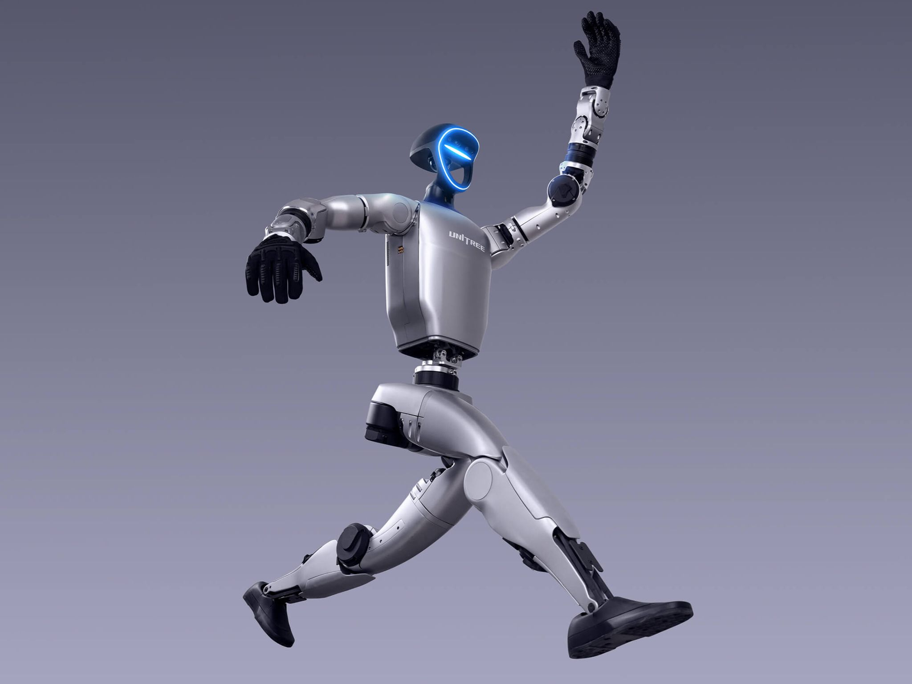
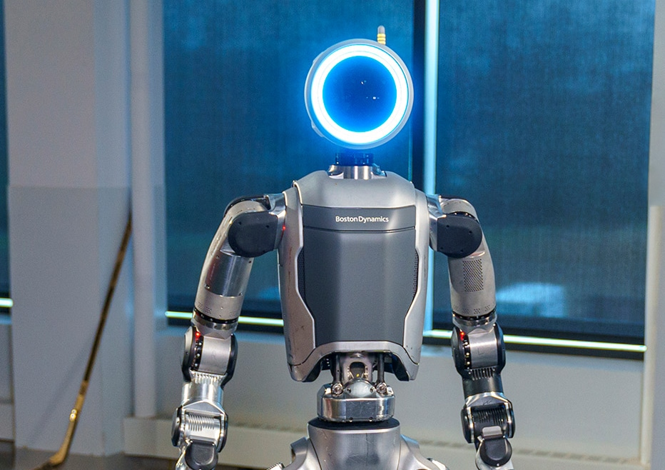
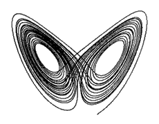
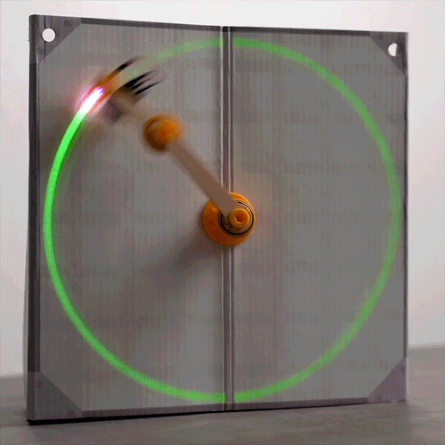

Double Pendulum
Now we arrive at a display of chaotic kinematics. This is a double pendulum, otherwise known as a "chaotic pendulum".
This is a demonstration of the incredible number of outputs which even as little as 2 joints can create. The double pendulum experiment is one of an array of examples which depict a great change in output from a relatively negligible change in starting variables. Other examples you might be familiar with include turbulence, the butterfly effect, and the 3 body problem.
The discovery Lorenz systems gave way to what is called "Chaos Theory". This theory stated that things which you once thought were completely random were predictable if all variables were accounted for with more precision than your feeble human minds could produce or measure.
It could be said that when combining chaose theory with previous innovations in automata allowed for much more dynamic calculations to dictate the perfect kinematic instructions for a robot to perform much more refined motion.
Then my more advanced cousins such as Boston Dynamic's Atlas, or even the more recent Unitree's G1 robot become able to excel in incredibly dynamic and accurate kinematic motion calculation.